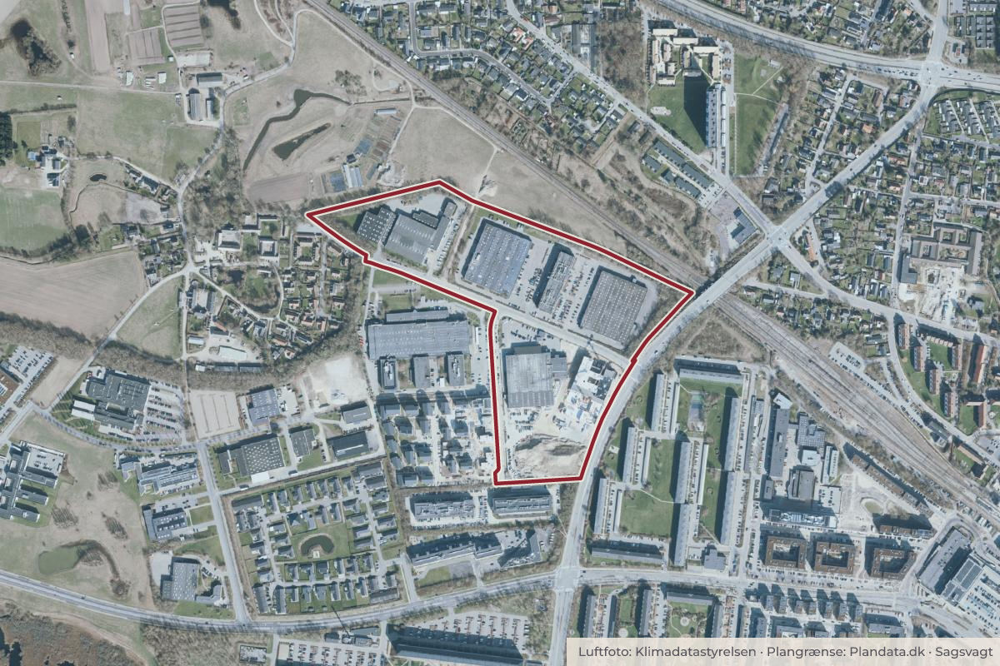

På dagsordenen 10. november, Klima- og Miljøudvalget, Ballerup
Igangsætning af ny lokalplanlægning for Telegrafvej 9 med tilhørende kommuneplantillæg
Center for By og Miljø indstiller, at 1. Der igangsættes en lokalplanlægning for Telegrafvej 9 med tilhørende kommuneplantillæg med afsæt i administrationens anbefalinger.

Kort: © OpenStreetMap-bidragydere. Plangrænse: Plandata.dk, Ballerup Kommune.

Kort fortalt
- Hvem
- Klima- og Miljøudvalget, Ballerup Kommune
- Hvornår
- Tirsdag 10. november 2026
- Status
- På dagsordenen. Sagen behandles på mødet.
Hvad kan du gøre?
- Skriv til politikerne
- Udvalgets møder er lukkede, men du kan skrive til medlemmerne før mødet tirsdag 10. november 2026. Du finder dem på ballerup.dk.
Læs hele sagen Kommunens egen tekst
Baggrund
Udvikling af Telegrafkvarteret tager afsæt i en helhedsplan, der blev vedtaget i 2018.
Telegrafvej 9 er omfattet af Lokalplan 200 for Telegrafvej 9, som blev vedtaget i december
2022. Planen blev udarbejdet i samarbejde med Ikano Bolig Ballerup ApS, som ejer
ejendommen. Telegrafvej 9 har tidligere været ejet af den tekniske skole TEC, som nu er
fraflyttet ejendommen. Lokalplan 200 giver mulighed for at nedrive den eksisterende
bygningsmasse og opføre etageboliger og rækkehuse, samt i mindre grad også fællesanlæg
og publikumsorienteret serviceerhverv. Grundejer har henvendt sig til Ballerup Kommune med
ønske om udarbejdelse af en ny lokalplan for området, der giver mulighed for etablering af at
parkeringshus.
Sagsfremstilling
Telegrafvej 9 ejes af Ikano Bolig Ballerup ApS. Ejendommen er omfattet af Lokalplan 200,
som blev vedtaget i 2022. De muligheder, som lokalplanen giver, er endnu ikke realiseret,
herunder nedrivning af den eksisterende bygningsmasse med det formål at opføre op til 37.000
m2 etageboliger og rækkehusbebyggelse, samt en mindre del fælleshus og erhverv.
Grundejer har henvendt sig til Ballerup Kommune, fordi grundejer mener, at den nuværende
parkeringsløsning vil blive en udfordring, når der skal indhentes byggetilladelse, på grund af
stigende krav til regulering af CO2 i byggeri. Det forventes, at kravene bliver yderligere skærpet
i bygningsreglementet i de kommende år. Parkeringskældre under bygninger og gårdrum, er
den parkeringsløsning, som har det største CO2-aftryk af alle typer parkeringsløsninger, mens
et parkeringshus har væsentligt lavere aftryk. Tilmed begrunder grundejer ønsket med,
at projektændringen forbedrer fri- og opholdsarealerne med færre niveauforskelle og færre
ramper til parkeringskældre og gårdrum.
Ikano ønsker en ny lokalplan. Den væsentligtste ændring består i, at parkeringsløsningen
ændres fra parkeringskældre under gårdrum og under etagebebyggelsen til parkering i et
fælles parkeringshus. Ikano ønsker samtidig at fastholde de nuværende byggeretter.
Etagearealet i den gældende lokalplan er fastsat til maksimalt 37.000
m2. I kommuneplanrammen er den 40.000 m2. Ændringen forudsætter en ny lokalplan og en
ændring af kommuneplanrammen, så anvendelsesbestemmelserne og etagearealet giver
mulighed for at opføre et stort parkeringshus.
Startredegørelsen, vedlagt som bilag, indeholder grundejers ændringsforslag, vurdering
af konsekvenserne, samt anbefalinger til den videre planlægning.
Vurdering af konsekvenser - fra parkeringskældre til fælles parkeringshus, samt øvrig parkering
Den ændrede parkeringsløsning tilfører en højere kvalitet til bebyggelsen, idet delvist
nedgravede parkeringskældre under bebyggelse og gårdrum giver terrænspring, samt et
stort arealbehov til ramper og trapper. Dette skyldes at den eksisterende parkeringsløsning vil
kunne resultere i gårdrum, der er op til 1,75 meter højere end det omgivende terræn.
Løsningen med et parkeringshus har dog den konsekvens, at der bliver omkring 200 meter fra
den bebyggelse i lokalplanområdet, der ligger længst væk til parkeringshuset, men giver til
gengæld bedre gårdrum i etageboligbebyggelsen. Eksisterende lokalplan 200 indeholder
mulighed for anlæggelse af handicapparkeringspladser på terræn nær bolig. Denne mulighed /
krav fastholdes.
I forhold til klimaaftryk kan projektændringen være positiv, idet parkeringsløsninger under dæk,
dvs. under bebyggelse og gårdrum, er den parkeringsløsning, der har det største CO2-aftryk,
mens opførelse af et parkeringshus medfører næsten halvt så meget CO₂. Beregningen af det
samlede klimaaftryk for hele bebyggelsen afhænger dog af, hvordan konstruktionen af
boligbebyggelsen i øvrigt løses, som f.eks. valg af materialer. Administrationen vurderer, at det
vil være muligt, at opføre kvalitetsbyggeri efter den gældende lokalplan 200, som overholder
kravene i bygningsreglement ift. CO 2 aftryk, hvis der projekteres med CO2
venlige byggematerialer til opførelse af boligerne.
Med projektændringen vil der ikke kun være parkering i parkeringshus, men også parkering på
terræn til f.eks. handicapparkering. Ved rækkehusbebyggelsen foreslår Ikano, at al parkeringen
udlægges som terrænparkering. Fordelen er, at parkeringspladserne er tæt ved boligerne,
hvilket kan være attraktivt for seniorsegmentet. Terrænparkering kan til gengæld have den
konksekvens, at der er mindre areal til fælles opholdsarealer og beplantning, hvilket kan
påvirke muligheden for at indfri ambitionerne om et grønt bykvarter. I Lokalplan 200 skal
parkering ved rækkehusene ske i form af carporte, der er udformet som en integreret del af
rækkehusbebyggelsen, samt terrænparkering. Administrationen anbefaler, at parkering ved
rækkehusene fortsat skal løses i form af carporte, som er integreret i rækkehusbebyggelsen,
samt terrænparkering, svarende til bestemmelserne i den gældende lokalplan.
En eventuel ny lokalplan vil indeholde bestemmelser om, at parkeringshuset begrønnes, og at
facaderne udformes med henblik på at skabe tryghed.
Højdegrænser
I den gældende lokalplan er der fastsat højdegrænser, som sikrer, at den nye bebyggelse ikke
kan ses fra Pederstrup landsby. Højdegrænserne fra den gældende lokalplan er fastholdt i
projektændringen. Højdegrænserne betyder, at der sker en nedtrapning fra 18 meter til 6 meter
for den bebyggelse, der ligger tættest på Pederstrup. Den visuelle afskærmning er udover
højdegrænserne sikret ved en eksisterende veletableret beplantet jordvold mellem Pederstrup
landsby og Telegrafkvarteret. Højdegrænserne og volden er illustreret på side 79 i Lokalplan
200 (se bilag).
Vurdering af konsekvenser - højere bebyggelsestæthed
Den gældende lokalplan 200 giver mulighed for at bygge et samlet etageareal på maksimalt
37.000 m2. Kommuneplanrammen giver mulighed for 40.000 m2. Grundejer ønsker, at den
nuværende byggeret på 37.000 m2 fastholdes og at parkeringshuset lægges oven i dette.
Dermed vil bebyggelsestæthed blive forøget i en ny lokalplan, hvor antallet af etagemeter
fastsættes til op til 48.500 m2.
Parkeringshuset vil med projektændringen erstatte en af de bygningsklynger, hvor der er i
eksisterende lokalplan 200 er udlagt til etageboliger. Etagearealet fra den pågældende
bygningsklynge omfordeles til de øvrige bygningsklynger med etageboliger.
Fortætningen løses ved, at bygningerne i de enkelte bygningsklynger bygges sammen, så
bebyggelsesstrukturen kommer til at minde mere om en karrebebyggelse. Derudover sker der
en mindre forøgelse af andelen af bebyggelse på 5 etager i forhold til den gældende lokalplan
200. Administrationen vurderer, at helhedsplanens udviklingsprincipper om at skabe
passagemuligheder og indre gårdrum med offentlig adgang, er fastholdt med
projektændringen, idet der fortsat er en åbning i hver bygningsklynge og store portåbninger.
Det er administrationens vurdering, at den øgede bebyggelsestæthed ikke vil opleves
væsentligt højere end de bebyggelsesmuligheder, som den gældende lokalplan 200 giver.
Dette skyldes at de delvist nedgravede parkeringskældre i eksisterende lokalplan 200 medfører
et stort arealforbrug til ramper og trapper for at sikre tilgængeligheden.
Byfortætning har den konsekvens, at det tilbageværende areal til at dække behovet for andre
arealforbrugende funktioner, såsom renovation, cykelparkering, kan resultere i, at arealer til
ophold og beplantning reduceres.
Konsekvenser: Opholdsarealer og bynatur
Med parkeringshuset vil beboerne have færre fælles opholdsarealer på terræn. Til gengæld vil
der blive opholds- og aktivitetsmuligheder på taget af parkeringshuset. I gårdrummene vil
projektændringen give beplantningen bedre vækstbetingelser, fordi plantebede kan etableres
på terræn frem for på terrændæk. Terrænparkering ved rækkehusbebyggelsen optager dog
areal i kantzone og langs den eksisterende beplantede vold mod Pederstrup.
Andelen af bebyggelse på 5 etager øges i mindre grad med projektændringen, da
bygningskroppe på 5 etager forlænges i den nye projekt. 5-etagers bygninger begrænser
muligheden for træer og anden beplantning nær bygningerne pga. brandredningskrav.
Bebyggelseshøjden kan derfor resultere i mindre beplantning i bebyggelsen. Til oplysning er
der i den gældende lokalplan 200 planlagt træer mod Telegrafvej. Ledningsforhold i jorden gør
det desværre ikke muligt at plante træer. Derfor vil der ved en ny lokalplanproces være fokus
på at finde alternative løsninger, som bidrager til at Telegrafkvarteret opleves, som et grønt
bykvarter.
Konsekvenser - klimatilpasning
Det kan være en udfordring at finde den nødvendige plads til regnvandsløsninger på terræn i
tætte bymiljøer, derfor vil der blive stillet krav til regn- og spildevandshåndteringen i forbindelse
med lokalplanlægningen. Administrationen vurderer, at projektændringen giver bedre mulighed
for etablering af regnvandsbede end den gældende lokalplan giver mulighed for.
Administrationens vurdering
På baggrund af ovenstående vurdering af fordele og ulemper anbefaler administrationen, at der
igangsættes en ny lokalplanlægning, samt ændring af kommuneplanrammen. Den
væsentligste grund er, at projektændringen forbedrer fri- og opholdsarealerne med færre
niveauforskelle og færre ramper til parkeringskældre og gårdrum og dermed giver mulighed for,
at forbedre bebyggelsens kvalitet i forhold til anvendelse af det ubebyggede areal.
Det er dog også administrationens vurdering, at såfremt indstillingen ikke følges, vil det fortsat
være muligt at bygge efter den gældende lokalplan 200 og få et projekt, der har høj
kvalitet. Administrationen vurderer, at de øgede krav til byggeriets CO2 aftryk i
bygningsreglementet fortsat kan efterkommes med den gældende lokalplan 200. Det betyder
blot, at bygherre skal overveje hvilke materialer boligerne bygges i, så det samlet CO2 aftryk
for hele bebyggelsen (P-kælder og beboelsen) overholder kravene.
Administrationens anbefalinger til den videre planlægning:
At give mulighed for at etablere et parkeringshus, samt fastlægge at det samlede
etageareal er maks. 48.500 m2 inkl. parkeringshus, samt at mulighed for at øge
bebyggelsestætheden yderligere begrænses.
At fastholde de nuværende højdegrænser med henblik på, at bebyggelsens højde ikke
påvirker oplevelsen af Pederstrup landsby, samt generelt at sikre gode lysforhold i
boligerne.
At sikre gode fællesfaciliteter og opholdsarealer, herunder haver/terrasser til
stuelejligheder, fælleshus for områdets beboere, semioffentlige og tilgængelige gårdrum
med mindre legepladser i hver bygningsklynge, samt et offentlig tilgængeligt opholds- og
aktivitetsområde på omkring 1.000 m2 på taget af parkeringshuset.
At parkeringshuset begrønnes og facaderne udformes, så de skaber tryghed, samt
generelt at skabe bynatur i området med gode vækstvilkår for træer og anden
beplantning.
At det dokumenteres gennem en regnvands- og spildevandshåndteringsplan, at områdets
regn- og spildevand kan håndteres forsvarligt på grunden.
At antallet af boligenheder evt. begrænses med henblik på, at det afledte arealbehov til
parkering ikke øges, samt at boligstørrelserne evt. reguleres med henblik på at opnå en
variation i boligudbuddet.
Såfremt udvalget vælger ikke at igangsætte udarbejdelse af ny lokalplan og
kommuneplantillæg, vil Lokalplan 200 fortsat være gældende.
Yderligere deltagelse:
På Klima- og Miljøudvalgets møde deltager Planchef Anne Skelmose fra Center for By og Miljø
under behandlingen af sagen.
Økonomiske konsekvenser og finansiering
Ingen økonomiske konsekvenser
Indstilling
Center for By og Miljø indstiller, at
1. Der igangsættes en lokalplanlægning for Telegrafvej 9 med
tilhørende kommuneplantillæg med afsæt i administrationens anbefalinger.
Bilag
- 3 bilag, heraf 2 anbefales
- BESLUTNINGEN TRÆFFES AF
- Klima- og Miljøudvalget
Kilde: Ballerup Kommune, Klima- og Miljøudvalget, dagsorden fra mødet tirsdag 10. november 2026, punkt 8. Læs den originale sag hos kommunen.